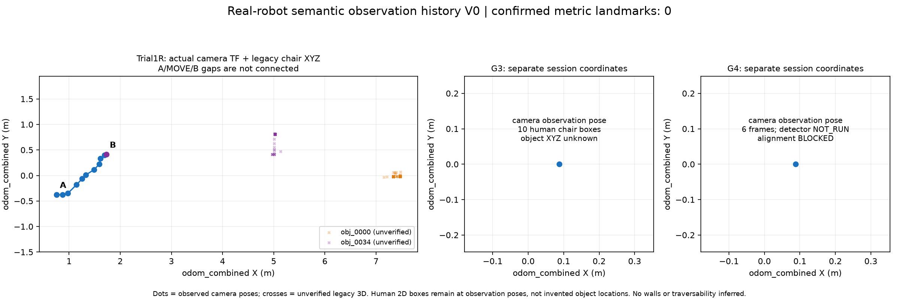
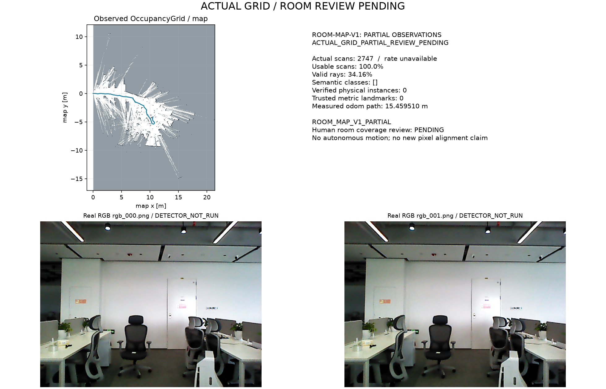
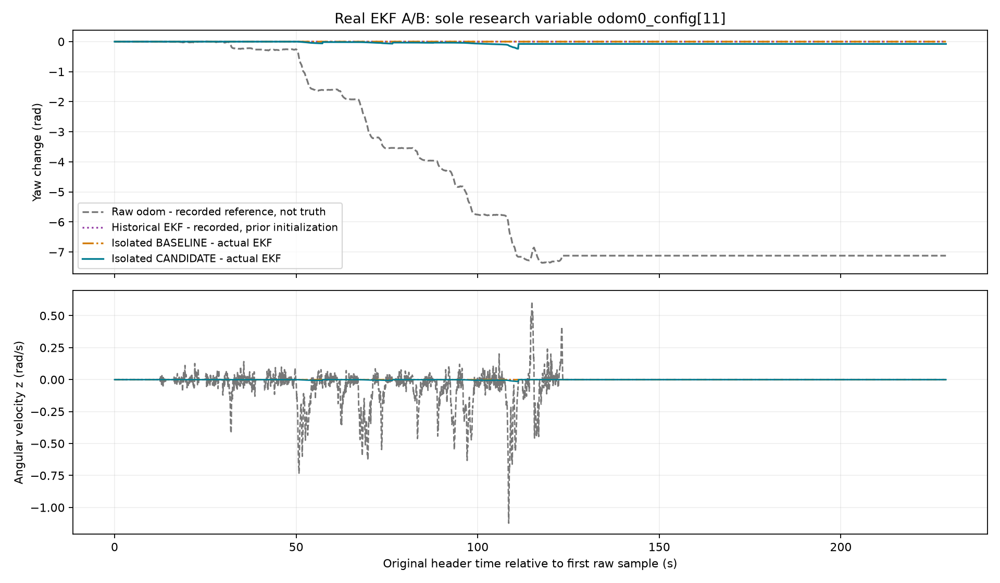
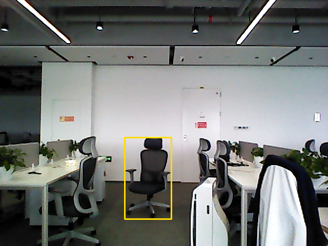
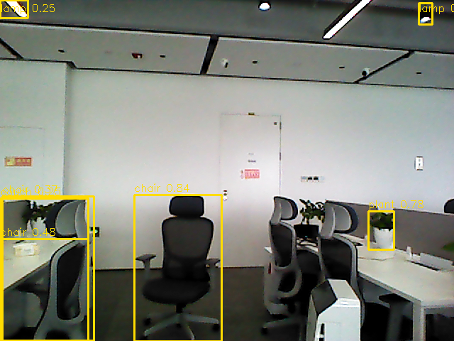

Abstract
Long-horizon vision-language navigation requires knowing not only where a robot is, but whether its progress remains consistent with the instruction. Rabbit-RobotNav investigates historical semantic-spatial evidence for deviation diagnosis and recovery-anchor selection without accessing evaluation labels. The framework separates recorded observations from trusted memory and checks instruction, history, and transition consistency. Controlled MP3D cases provide preliminary diagnostic evidence; real-robot experiments expose unstable object identity and insufficient heading fusion during room mapping. Reliable mobile mapping, navigation gains, and autonomous recovery remain unverified.
Method Overview
- Record before trusting. Preserve time-stamped observations, poses, and source records. Repeated detections do not establish physical identity or a reliable landmark.
- Diagnose with sufficient evidence. Compare instruction, history, and spatial transitions. The read-only adapter explicitly reports insufficient evidence instead of treating a missing signal as normal navigation.
- Recover from a supported state. Investigate an earlier trustworthy state as an anchor. Real-robot anchor validation and recovery execution are still open.
From Observations to Reliable History
Archived real-robot sessions now replay into 1,149 raw states and 3,477 semantic observations. These are repeated observations, not unique objects. None has yet been admitted as a trusted state or landmark.

Read-only diagnosis. All 1,149 replayed states lack sufficient consistency evidence; no reliable recovery anchor is available. Zero supported deviation detections here means not evaluable, not successful navigation. View the diagnostic audit.
Real-Robot Room Survey
A human-controlled survey now provides an actual occupancy grid and synchronized sensor records: approximately 229 seconds, 2,747 laser scans, and 225 RGB keyframes. Collection is complete; room-map acceptance is not.

Map review pending. Radial streaks and inconsistent return estimates prevent a reliable geometry claim. Object detection was not run, and no metric landmark has been verified. This separate survey does not extend the 1,149-state historical replay; all robot movement was human-controlled.
Why heading evidence matters
The recorded fused heading stayed at zero despite turns in raw odometry. An isolated A/B test of the actual extended Kalman filter (EKF) enabled only odometry angular-velocity fusion. The candidate still failed: heading changed by −0.077 rad, versus −7.122 rad in the recorded input.

Supported finding, not a completed fix. The driver reports angular-velocity variance of 1,000 whenever any velocity component is nonzero; the source, executable constants, and recorded messages agree. This explains strong down-weighting in the tested candidate, not the sole cause of every map artifact. Source audit.
Latest IMU check. A separate stationary recording received 500 raw inertial measurement unit (IMU) messages at approximately 20 Hz. The filtered IMU topic selected by the EKF had no publisher. Static screening is complete, but turning response and measurement reliability remain unverified; no fusion candidate has been selected. Stationary evidence & original plots.
Next: record synchronized IMU and odometry during a separately authorized, controlled turn with an independent angle reference, before selecting another fusion candidate or accepting the room map.
Experimental Evidence
Video 1. Controlled MP3D instruction-order violation. Plotted points are sparse reference waypoints; “correction triggered” is a replay decision, not an executed robot recovery.
| Evaluation | Observed result | Evidence boundary |
|---|---|---|
| Controlled MP3D · 5 scenes / 5 episodes | 3/4 deviation types detected; 0/34 normal reference points alerted | Small mechanism study; a 2.44 m pose jump was missed |
| Paired CMA navigation A/B · 110 episodes | SR tied; SPL and nDTW did not improve | No demonstrated navigation gain |
| WheelTec · manual-move Trial 1R | Same chair: obj_0000 → obj_0034 | Identity persistence failed; cause remains inconclusive |
| Real-history read-only diagnosis · 8 Oct | 1,149/1,149 states: insufficient evidence; 0 reliable anchors | Diagnosis not evaluable; not a zero-error result |
| Manual room survey · 9 Oct | 2,747 scans; 225 RGB keyframes; occupancy grid captured | Geometry review pending; no verified metric landmarks |
| Isolated actual EKF A/B · 9 Oct | Candidate heading: −0.077 rad; recorded input: −7.122 rad | Candidate failed; no deployment or ground-truth accuracy claim |
| Stationary IMU input audit · 9 Oct | 500 raw messages at ≈20 Hz; filtered topic has no publisher | Turning response and reliability unverified; no fusion candidate |
SR: success rate · SPL: success weighted by path length · nDTW: normalized dynamic time warping.
Failure cases & additional replays
Human-confirmed views of the same chair before and after manual movement. The ID change remains a failure, not evidence of successful relocalization.


Pose-jump miss video · Spatial-conflict replay video · Historical depth trace

These controlled videos and the depth trace do not establish a physical error cause or autonomous recovery. The 8 October live diagnostic attempt stopped at its initialization memory limit before processing any frames.
Resources
Thesis framework · Experimental ledger · Code snapshot · Image provenance
Research mind map
The research question, evidence boundaries, and next experiment, updated 9 October 2026. This is a research outline, not an experimental result.
